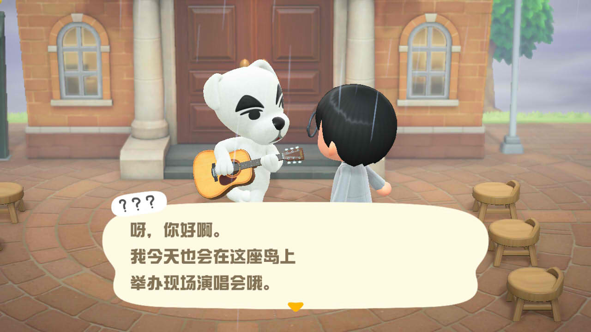
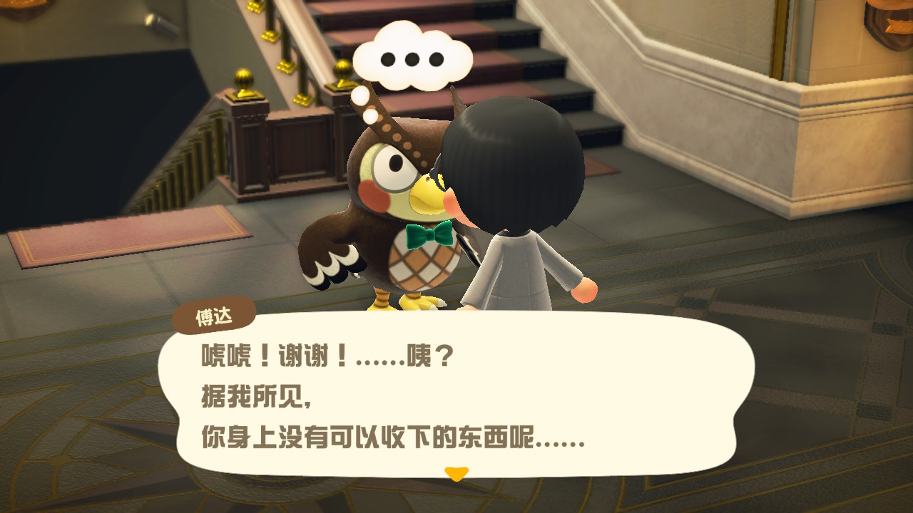

不知不觉，《集合啦！动物森友会》已经在任天堂Switch平台上发售两年多了。
无论你是否已经上岛，都可以来这里测测你的岛民等级狸！
点击选项前的圆圈进行答题，每道题目只有一个正确选项。
正确答案越多，评价也越高狸。
该测试只作娱乐，毕竟动森里的生活可比这丰富得多！
Q1.下图左侧的小动物NPC叫什么名字？
Q2.博物馆不接收哪类藏品的捐献？
Q3.请选择应该填入的词语：不是鱼露，而是____？

不知不觉，《集合啦！动物森友会》已经在任天堂Switch平台上发售两年多了。
无论你是否已经上岛，都可以来这里测测你的岛民等级狸！
点击选项前的圆圈进行答题，每道题目只有一个正确选项。
正确答案越多，评价也越高狸。
该测试只作娱乐，毕竟动森里的生活可比这丰富得多！